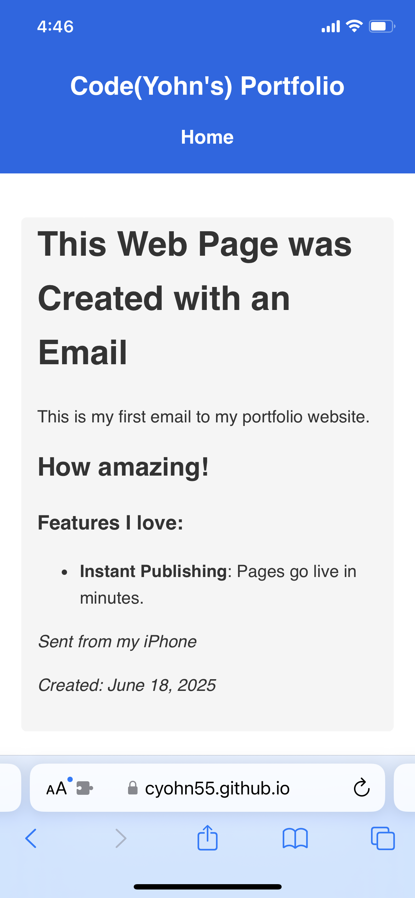

This Web Page was Created with an Email

For a new college graduate, a well-written resume, cover letter, and diverse portfolio is often an important step for finding a job in the industry. A portfolio website allows developers to highlight coding projects and demonstrates their ability to code a website. However, in the age of AI, the canonical approach to build a portfolio/blog site is cumbersome, the syntax is verbose, and trivial problems can take an evening or longer to sort out.
AI has now entered the chatBut, not all is doom and gloom with the help of AI. I wanted to create a simple way where I could quickly add new posts to my portfolio without needing to code them by hand. I knew there were plenty of blogging tools available to me, but I wanted to attempt “vibe coding” to get a better understanding of what LLMs are capable of.
For the blog tool, I wanted the ability to draft a new email, include text, images, and video in the body of the email, which would act as a HTML blueprint for building a new web page. The email would trigger a git push command, pushing my portfolio website live to my github pages website, once the email is sent.
Here is how it works:

And here is the result:
 Sent from my iPhoneCreated: June 19, 2025